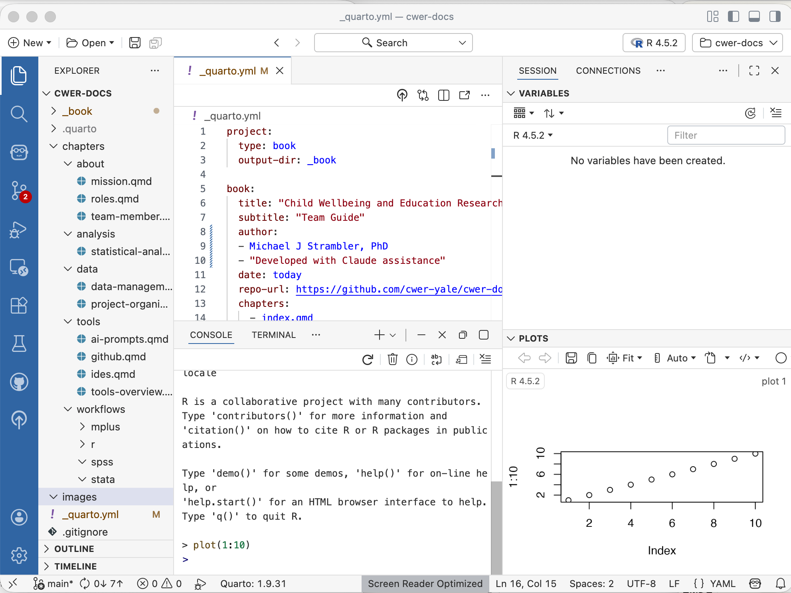
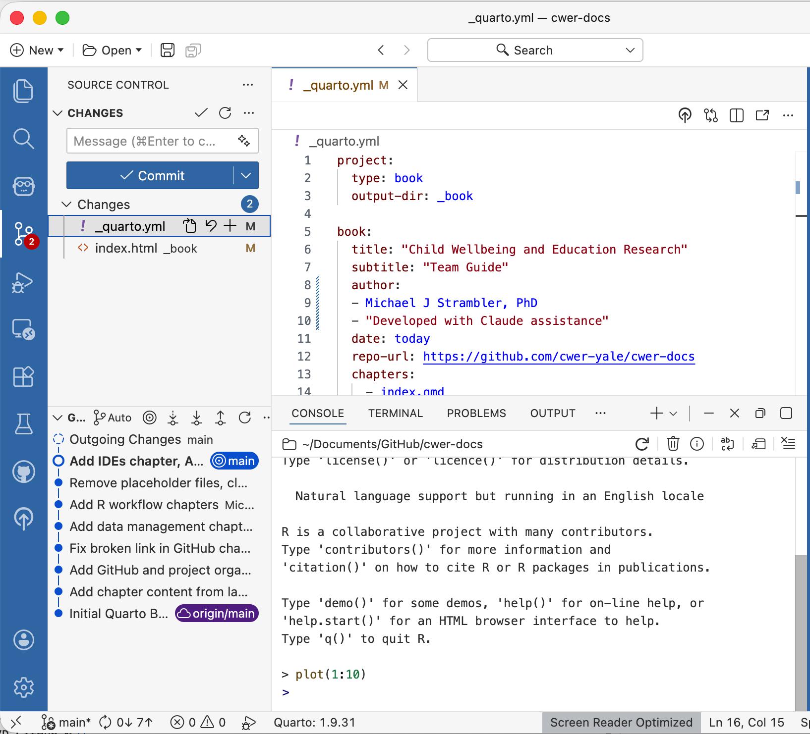
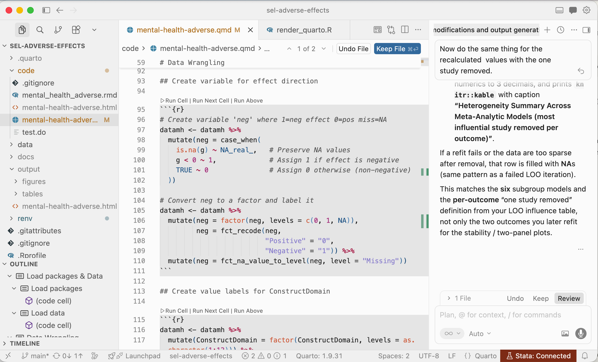
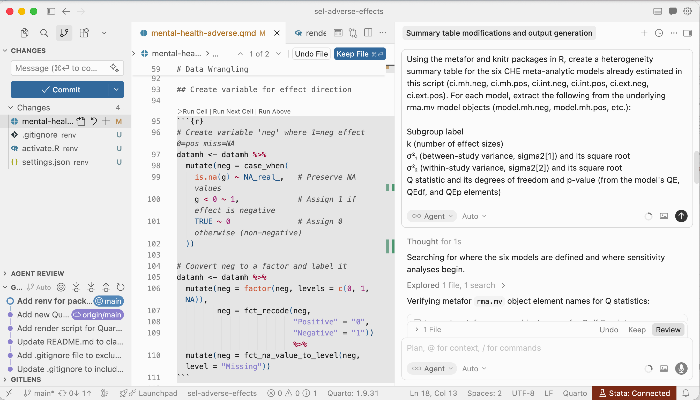
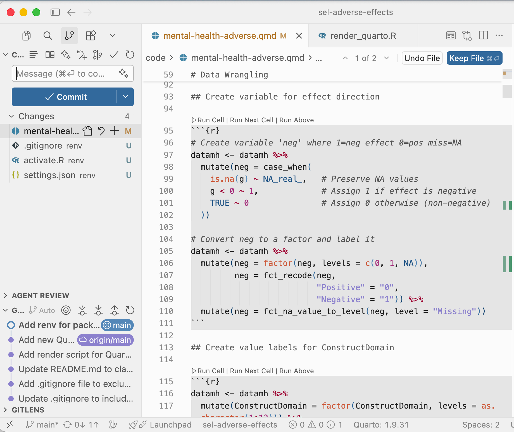

6 IDEs
An IDE (Integrated Development Environment) is the application you use to write and run code. While you could write R or Stata code in a basic text editor, an IDE adds features that make the work significantly easier: syntax highlighting, error detection, an integrated console for running code interactively, file management, Git integration, and AI assistance. For most researchers, the IDE is where they spend the majority of their working time.
We recommend two IDEs: Positron for most team members, and Cursor for those who want deeper AI integration in their coding workflow.
6.1 Positron
Positron is developed by Posit, the same company that developed RStudio. It is designed specifically for data science work and has great support for R, Quarto documents, and the kinds of workflows CWER uses day to day. Positron is the successor to RStudio and is what new team members should install.
Key features relevant to CWER work:
- R console — run R code interactively, see output and plots inline
- Variable explorer — inspect objects in your R environment at a glance
- Quarto support — write, preview, and render
.qmddocuments natively - Git integration — stage, commit, push, and pull from the Source Control panel without opening the terminal
- Terminal — access the command line directly within the application
- Extension support — install extensions to add functionality (see the Tools Overview chapter for recommended extensions)
Positron also offers AI support, but it does so by connecting to a model of your choice via an API. That is, you need to connect it to a model via your AI model account (e.g., Claude). This approach also charges a small amount per prompt. To avoid these charges, you can do all of your AI prompting in your Clarity or your Claude account and paste code into the Positron console. Alternatively, if you are relying heavily on AI support, Cursor may feel more natural (see below).
Download Positron at positron.posit.co.

6.1.1 Getting Started in Positron
Positron works by opening a folder as your workspace rather than individual files. When you start working on a project, use File → Open Folder to open the project’s root directory. All of Positron’s tools — the file explorer, R console, terminal, and Git panel — will then work relative to that folder.
The main panels you will use:
- Explorer (left sidebar, top icon) — browse and open files in your project
- Source Control (left sidebar, branching icon) — Git operations: stage, commit, push, pull
- Console (bottom panel) — run R code interactively
- Terminal (bottom panel) — run shell commands
- Plots (right panel) — view figures produced by R
6.1.2 Git in Positron
For day-to-day Git operations, the Source Control panel is the most convenient approach:
- Make changes to your files
- Click the Source Control icon in the left sidebar
- Changed files appear under Changes — click the + next to each file to stage it, or click + next to Changes to stage all
- Type a commit message in the box at the top
- Click the ✓ Commit button
- Click the Sync button (or the push icon) to push to GitHub

For pulling changes from teammates, click the Sync button or use the … menu and select Pull.
6.2 Cursor
Cursor is an IDE built on the same foundation as Positron and VS Code but with deeper AI integration woven throughout the editing experience. Where Positron treats AI as an add-on, Cursor builds AI assistance into the core of how you write code. It can suggest completions, edit code in response to natural language instructions, and answer questions about your codebase without leaving the editor.
Cursor is a good choice for team members who are doing substantial coding work and want AI assistance that feels more seamless than copying and pasting between an IDE and a chat interface. It supports R, Stata (through a Stata MCP extension), works with Quarto documents, and has the same Git integration as Positron.

6.2.1 Key Features
Main features that differentiate Cursor from Positron:
- Inline AI editing — highlight code and give natural language instructions to edit it in place (e.g., “recode this to use tidyverse” or “add error handling here”)
- AI chat panel — a dedicated panel for asking questions about your code and project, accessible without leaving the editor
- AI autocomplete — context-aware suggestions that go beyond standard autocomplete, drawing on the surrounding code and your project structure
- Model choice — use Claude, GPT-4, or other models depending on the task. Cursor’s default mode switches between AI models based on the task
6.2.2 AI Chat
The AI chat panel is one of Cursor’s most useful features for research workflows. You can ask questions about your code, request explanations of functions, or ask Cursor to help debug an error — all within the editor, with full awareness of your project’s files and context.

To open the chat panel, press Cmd+L or click the chat icon in the right sidebar.
6.2.3 Git in Cursor
Cursor has the same Source Control panel as Positron, accessible via the branching icon in the left sidebar. The workflow is identical — stage files, write a commit message, commit, and push.

One additional feature: Cursor can generate commit messages automatically based on your staged changes. Click the sparkle icon in the commit message box to generate a message.
6.2.4 Download
Download Cursor at cursor.com. Cursor is free for individual use with generous limits on AI features.
6.3 Which Should I Use?
The choice is yours. For some CWER team members, starting with Positron may feel more natural, especially if you’ve had experience with RStudio. It is purpose-built for data science, has excellent R and Quarto support, and is straightforward to learn. Once you are comfortable with your analysis workflows, consider trying Cursor if you find yourself frequently switching between your IDE and a chat interface for coding help.
You also don’t have to choose one over the other. Both IDEs are free. You can have both installed and switch between them as they work with the same files and Git repositories.